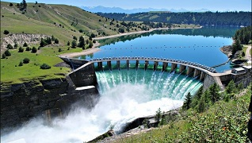
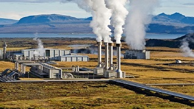
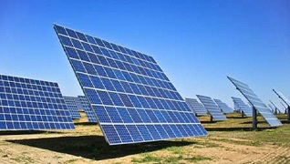
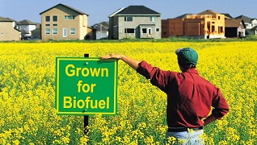

Use Wind Power
Wind power is the use of air flow through wind turbines to mechanically power generators for electric power.Wind is the movement of air from an area of high pressure to an area of low pressure. In fact, wind exists because the sun unevenly heats the surface of the Earth. As hot air rises, cooler air moves in to fill the void. As long as the sun shines, the wind will blow. And as long as the wind blows, people will harness it to power their lives.Power is generated from the wind by converting the speed of the wind into electricity. The faster the wind travels, the more electricity can be generated. Four percent of the energy used each year in the United States originates from wind power.
Use Hydro Power

The most common type of hydroelectric power plant uses a dam on a river to store water in a reservoir. Water released from the reservoir flows through a turbine, spinning it, which in turn activates a generator to produce electricity. But hydroelectric power doesn't necessarily require a large dam. Some hydroelectric power plants just use a small canal to channel the river water through a turbine.Harnessing power from water is another way to generate renewable energy. The force of gravity and the flow of water work together to generate electricity that can potentially provide around twenty percent of the world's energy needs.
Use Geothermal Energy Power

Geothermal energy is the heat from the Earth. It's clean and sustainable. Resources of geothermal energy range from the shallow ground to hot water and hot rock found a few miles beneath the Earth's surface, and down even deeper to the extremely high temperatures of molten rock called magma.Scientists can convert heat produced from beneath the Earth's crust to generate geothermal energy. Digging beneath the surface and using some of that heat can provide people with a vast amount of energy. There are a few different methods currently available that can tap into this source of power to generate energy.
Use Solar Energy

It is an important source of renewable energy and its technologies are broadly characterized as either passive solar or active solar depending on how they capture and distribute solar energy or convert it into solar power. Active solar techniques include the use of photovoltaic systems, concentrated solar power and solar water heating to harness the energy. Passive solar techniques include orienting a building to the Sun.By using a method called photovoltaics, researchers found they can generate electrical power by funneling the sun through a specific medium like copper or silicon to harness the energy from solar radiation.
Use Biomass
Biomass is organic matter derived from living, or recently living organisms. Biomass can be used as a source of energy and it most often refers to plants or plant-based materials that are not used for food or feed, and are specifically called lignocellulosic biomass.As an energy source, biomass can either be used directly via combustion to produce heat, or indirectly after converting it to various forms of biofuel.Burning plants can also generate energy. As plants grow, they use the process of photosynthesis to thrive and grow. The photosynthesis process generates energy and when burned, plants release their energy. Dead plant matter and residue can also transfer into a renewable energy source by applying heat
Use Biofuel

A biofuel is a fuel that is produced through contemporary biological processes, such as agriculture and anaerobic digestion, rather than a fuel produced by geological processes such as those involved in the formation of fossil fuels, such as coal and petroleum, from prehistoric biological matter. Biofuels can be derived directly from plants, or indirectly from agricultural, commercial, domestic, and/or industrial wastes.